 <!DOCTYPE HTML>
 <html lang="zh-CN">
 <head><meta name="generator" content="Hexo 3.9.0">
   <meta charset="UTF-8">
   
     <title>i wanna 游戏制作（一）</title>
     <meta name="viewport" content="width=device-width, initial-scale=1, maximum-scale=3, minimum-scale=1">
     
     <meta name="author" content="IceAbyss">
     
     <meta name="description" content="第一篇：Hello World!">
     
     
     
     
     <link rel="alternate" href="/atom.xml" title="Here. There." type="application/atom+xml">
     
     
     <link rel="icon" href="/static/images/icon.ico">
     
     
     <link rel="apple-touch-icon" href="/static/images/icon.ico">
     <link rel="apple-touch-icon-precomposed" href="/static/images/icon.ico">
     
     <link rel="stylesheet" href="/blog_something/css/style.css">
     

     <!-- APlayer -->
     <link rel="stylesheet" type="text/css" href="../../musicUI/APlayer.min.css">
     <script type="text/javascript" src="../../musicUI/APlayer.min.js"></script>
     <script src="https://cdn.jsdelivr.net/npm/vconsole/dist/vconsole.min.js"></script>
     <script src="https://cdn.jsdelivr.net/npm/hls.js/dist/hls.min.js"></script>
     <script src="APlayer.js"></script>
     <script src="https://cdn.jsdelivr.net/npm/color-thief-don@2.0.2/src/color-thief.js"></script>
     


 <script type="text/javascript">
 var _hmt = _hmt || [];
 (function() {
   var hm = document.createElement("script");
   hm.src = "//hm.baidu.com/hm.js?3d902de4a19cf2bf179534ffd2dd7b7f";
   var s = document.getElementsByTagName("script")[0]; 
   s.parentNode.insertBefore(hm, s);
 })();
 </script>
 
 </head>
 </html>
   <body>

     <header>
       <div>
         
             <div id="imglogo">
                 <a href="/"></a>
             </div>
             
             <div id="textlogo">
                 <h1 class="site-name"><a href="/" title="IceAbyss Blog">IceAbyss Blog</a></h1>
                 <h2 class="blog-motto">i wanna 游戏制作（一）</h2>
             </div>
             <div class="navbar"><a class="navbutton navmobile" href="#" title="菜单">
             </a></div>
             <nav class="animated">
                <ul>
                     
                    <li><a href="/index.html">Home(主页)</a></li>

                    <li><a href="/blog.html">Blog(博客)</a></li>

                    <li><a href="../../about/index.html">About(关于)</a></li>

                    <li><a href="../../iasearch.html">IASearch(IA搜索页)</a></li>

                    <li><a href="/music.html">Music(音乐)</a></li>

                    <li><a href="../../update.html">UpdateLog(更新日志)</a></li>
                     
                 </ul>
             </nav>			
 </div>
 
     </header>
     <div id="container">
       <div id="main" class="post" itemscope itemprop="blogPost">
     <article itemprop="articleBody"> 
         <header class="article-info clearfix">
   <h1 itemprop="name">
     
     
       <a href="4.html" title="Hello World!" itemprop="url">i wanna 游戏制作（一）</a>
   </h1>
 
   
   <p class="article-author">By 冰渊(IceAbyss)
     </p>
 
   <p class="article-time">
     
     
     <time datetime="2022-8-21T11:00:01.000Z" itemprop="datePublished">2022-8-23</time>
     
   </p>
 </header>

 <br>

 <!-- APlayer -->
    <div id="player1"></div>
    <script>
        if (/mobile/i.test(window.navigator.userAgent)) {
            new VConsole();
        }
    </script>
    <script src="https://cdn.jsdelivr.net/npm/jquery"></script>
    <script src="demo.js"></script>

 <!-- APlayer Done -->

     <div class="article-content">


    <h1 id="i-wanna-游戏制作（一）">i wanna 游戏制作（一）</h1>
<h2 id="介绍">介绍</h2>
<p>什么是 i wanna 游戏？在百度百科中有一个非常直观的描述：I wanna 是一款原创类虐心系列游戏。</p>
<p>这么说我是非常赞同的，因为在 i wanna 游戏中玩家需要通过自己的操作获得游戏胜利，游戏的难度极高，一般人很难通关游戏。😅</p>
<p>这个系列是由 I wanna be the guy 这款游戏延伸，形成了现在数千款游戏构成的庞大系列。这意味着每个人都可以做i wanna系列的游戏了。</p>
<p>那么具体 i wanna 的相貌如何呢？给你看张图你就明白了：</p>
<p>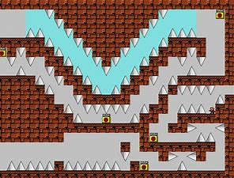</p>
<p>看看这满屏幕的刺，感觉不像是游戏，而更像是折磨😂。因为游戏的难度极高，因此通关后有极大的成就感，相信不少的小伙伴都非常喜欢。</p>
<p>我之前玩的 i wanna系列游戏 kokomi kokomi kokomi 虽然难度只有37，但它的前五张图我过了两个小时，死了660次。😅我也不怕出丑，给大家看看：（<strong>注：</strong>右上角是死亡次数和时间）</p>
<p>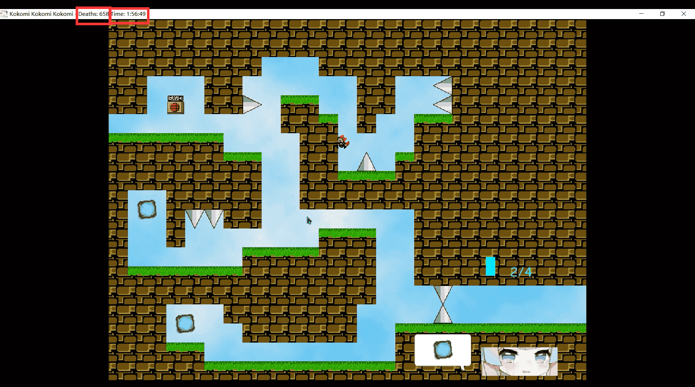</p>
<p>我特别喜欢B站上<a href="https://space.bilibili.com/168598">逍遥散人的 i wanna 游戏视频</a>👈，大家喜欢可以去看一下。</p>
<p>网上关于GameMaker 8 唯一能看的资料：<a href="https://gm8.nihil.cc/">GameMaker 8.0 从入门到入土 </a></p>
<p><strong>因为网上的 i wanna 和 GameMaker 8 的教程少之又少，所以我都是看着文档一点一点试出来的，若有不对，欢迎指出 :)</strong></p>
<h2 id="引擎下载">引擎下载</h2>
<p>这次做游戏的主引擎我选择的是 GameMaker 8.0，因为相比于 unity 、虚幻4等游戏引擎更好上手，也更容易做像 i wanna 一样的2D小游戏。</p>
<p>在那之后我们还需要下载一个专门制作 i wanna 的引擎，网上有很多种，在这里我选择 yuuutu（玉兔）引擎，因为玉兔引擎对新手特别友好。 :) <a href="https://www.mediafire.com/file/dagnsfmaz1jc8xb/IWBTE_yuuutu_edition_ver2.17.zip/file">点击这里下载 yuuutu 引擎</a></p>
<h2 id="界面">界面</h2>
<p>当我们准备好主引擎和玉兔引擎之后，可以复制一份玉兔引擎并打开作为今天的开发地。<strong>注意：不要直接用下载下来的玉兔引擎，不然以后要再开发还需要重新下载！</strong></p>
<p>打开后的界面是这样的：</p>
<p>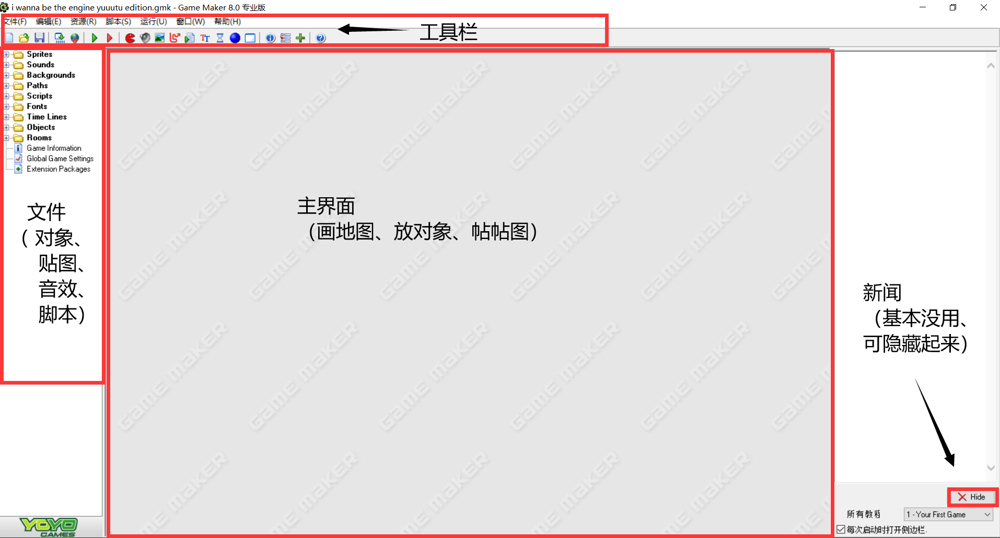</p>
<p>界面主要分为 4 部分：</p>
<ul>
<li>工具栏 ：从左到右依次为 -&gt; 创建新工程、打开游戏工程、保存工程 、创建可执行文件、上传至开发者之家、运行游戏、运行调试模式、创建精灵、创建声音、创建背景、创建路径、创建脚本、创建字体、创建时间轴、创建对象、创建房间、改变游戏信息、改变游戏全局设定、扩展包、查看帮助文档。常用的有 @保存工程：这个很重要，要不然你做了一天的工程就因为忘点保存就白做了。@创建可执行文件：当你的游戏工程做完之后，就可以把工程打包成可执行文件发给你的小伙伴玩了。@运行游戏：当你想试试工程文件的运行效果时，可以点击运行游戏试玩。</li>
<li>文件栏：文件栏就是放一些工程中需要用到的文件，例如对象、贴图、音乐、脚本等等。                                                             
<br><strong>Sprites</strong>
存放所有精灵贴图，当然这些贴图可以自己编辑，也可以自己设置一下碰撞盒
<br><strong>Sounds/SE</strong>
存放的是游戏的音效文件
<br><strong>Backgrounds</strong>
存放的是背景图片和一些瓷砖贴图
<br><strong>Paths</strong>
存放的是路径，可以让游戏中的物体沿一定的路径移动
<br><strong>Scripts</strong>
存放的是脚本文件，果引擎内置了不少方便的脚本供使用，可用来进行一些初始化操作，和实现一些功能，比如<strong>淡入淡出</strong>，<strong>放射一圈物体</strong>，<strong>闪屏效果</strong>和<strong>屏幕抖动</strong>等等
<br><strong>Fonts</strong>
字体文件
<br><strong>Time Lines</strong>
存放的是时间轴，可设定一定步数（帧）后执行某项操作，精确度较高，一般用于做耐久关卡和音游
<br><strong>Objects</strong>
游戏物体，比如砖块，玩家，存档点，刺，传送点，如果有需要的话你可以尽情的对它们的代码进行修改，当然前提是你最好确保改坏了还能改回来
<br><strong>Rooms</strong>
存放的是游戏房间，也称为场景，引擎也提供了许多的房间实例供我们参考</li>
<li>主界面：我们可以在主界面打开房间画地图、放对象、帖帖图、写脚本等等一系列操作。</li>
<li>新闻界面：主要是一些新闻，没啥用，点击下方 Hide 可隐藏。</li>
</ul>
<h2 id="创建房间">创建房间</h2>
<p>我们可以在文件栏的 Rooms 下右键创建房间、也可以在 Rooms 目录下的文件夹内右键创建房间。</p>
<p>在主界面选择 <strong>设定</strong> 来调整房间的基本参数，名称随便起，宽、高一般是 800 , 608 ，其它值保持默认就好。然后在主界面上方更改网格数，一般为 32X32 的网格。（如下图）</p>
<p>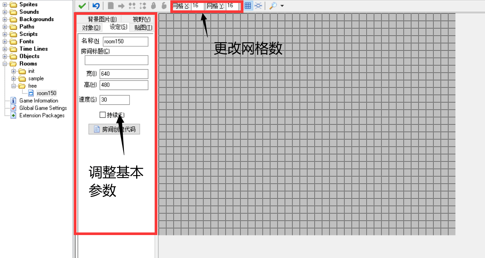</p>
<h2 id="制作第一个简单的地图">制作第一个简单的地图</h2>
<h3 id="1-画个简单的场地">1. 画个简单的场地</h3>
<p>①改背景，方便制作和贴图：点击背景图片，将背景色改为类似于天空的颜色或者其他。</p>
<p>②画砖块：在对象中我们可以选择要添加的物体，选择 <strong>Block--&gt;Block</strong>，开始在房间画砖块，按住 shift 键可以连续地绘制，如果画错可以鼠标右键删除。我们可以把背景颜色调暗一点来画（提示：这里也可以调节精灵的透明度，因为精灵不显示所以不影响最终的效果）
注意<strong>切回对象界面再画</strong>（切到星空界面也可以），<strong>不可以画歪</strong>！</p>
<p>③给砖块贴图：然后我们点击<strong>贴图面板</strong>，选择<strong>Alltiles图片</strong>，开始为画好的砖块贴上贴图。</p>
<p>④添加初始人物：<strong>点击对象</strong>，在画好以后添加一个<strong>playerStart</strong>，作为玩家初始化位置： <strong>player_etc--&gt;playerStart</strong></p>
<p>⑤加刺：然后我们就可以加点刺了 generic threats--&gt;spikeUp</p>
<p>⑥加存档 <strong>saves--&gt;savePoint</strong></p>
<p>好了，地图画完了，我画的是这样的，你们画的是什么样的呢？</p>
<p>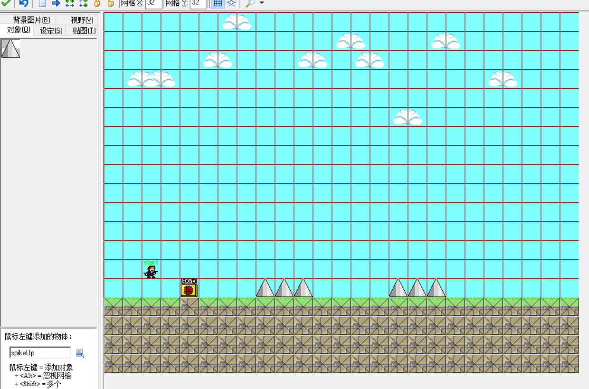</p>
<p>最后我们还得调一下初始房间的设置，把初始房间设为我们制作好的房间。在文件栏中打开 Object --&gt; warpStart 选择 player 打开执行代码。</p>
<p>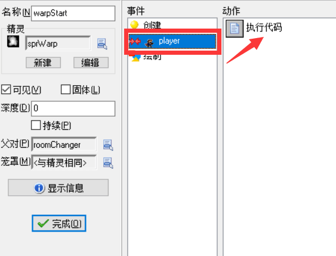</p>
<p>将代码中的 roomTo = 后面的房间改成你自己的房间名称，如我的房间名称为 level1 ，我要将其该为 roomTo = leve1; （如下图）</p>
<p>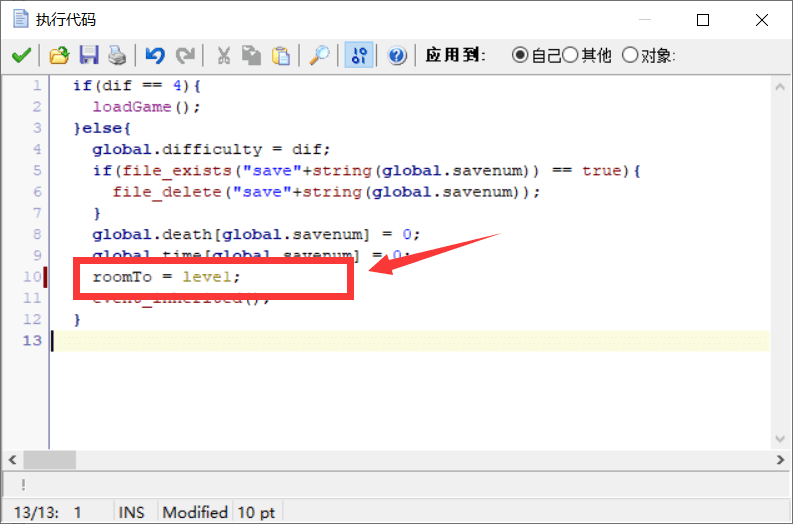</p>
<p>之后再点击工具栏的运行游戏就可以玩了！</p>
<h3 id="2-创建传送点">2. 创建传送点</h3>
<p>传送点可以将你传送到任意一个房间。可在对象 --&gt; warp 里放置到地图中。</p>
<p>当然我们还需要指定传送点的传送房间、转场效果等等。这就需要我们编写一些脚本了。<strong>鼠标选择传送点，ctrl+右键，创建时执行代码</strong>，如果不小心直接鼠标右键把它删了可以 ctrl+Z 撤销。</p>
<p>然后我们就可以开始编写脚本了，这里用的语言是 GameMaker Language (GML)，warp 的主要参数如下：</p>
<pre><code class="language-GML">roomTo = leve1	// 必填，传送到的房间名称
kind = 0	// 可选，使用的房间转场效果
text = &quot;text&quot;	//可选，绘制文字
color = c_red	//可选，文字颜色
</code></pre>
<p>具体的转场特效可以看看帮助文档：</p>
<p>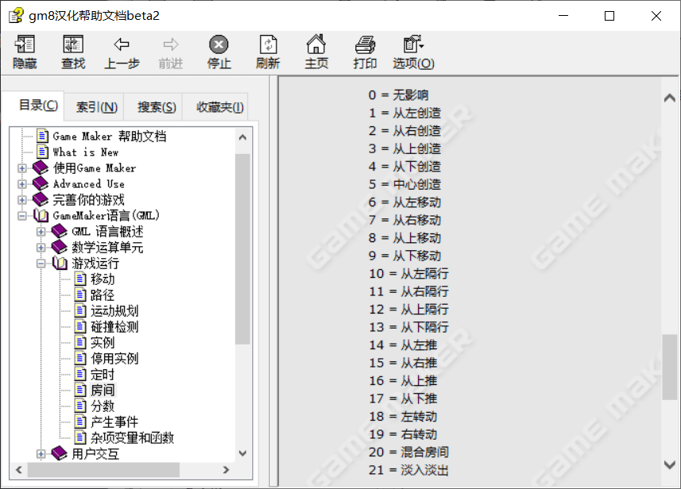</p>
<p>我的传送点做好了，你呢？</p>
<p>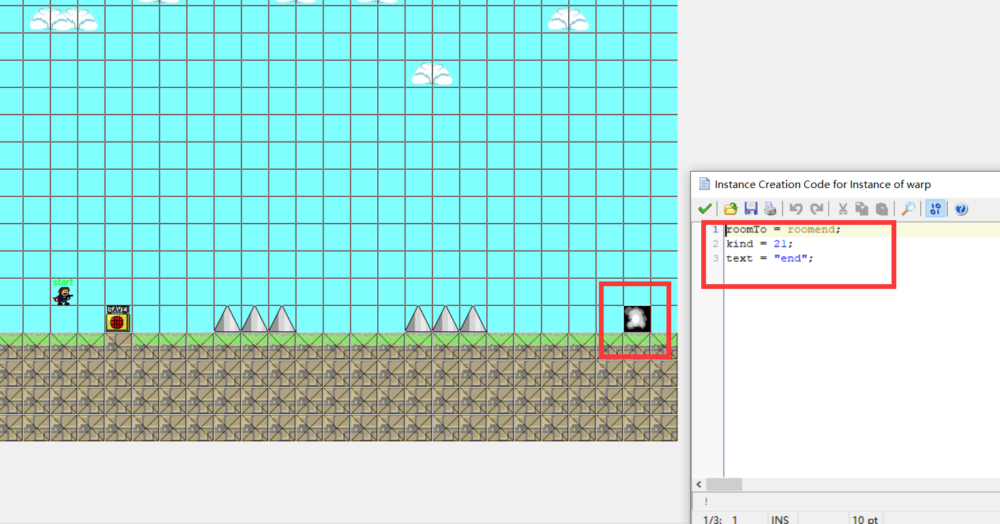</p>
<h3 id="3开始做坑（飞刺）">3.开始做坑（飞刺）</h3>
<p>首先我们要先有一个触发器，在对象中找到 free trigger --&gt; freetrigger ，把它放在你想让玩家触碰之后执行坑的位置，然后ctrl+鼠标右键，创建时执行代码。具体参数如下：</p>
<pre><code class="language-GML">trg = 1;		// 必填，触发器编号
image_yescale = 2;	// 可选，是扩大Y轴范围（正向下负向上）
image_xescale = 2;  // 可选，是扩大X轴范围（正向右负向左）
snd = sndCherry		//可选，触发时音效
</code></pre>
<p>然后我们就可以在对象的 free trigger 中找到我们需要的陷阱，把它放在地图上，然后ctrl+鼠标右键，创建时执行代码。具体参数如下：</p>
<pre><code class="language-GML">trg = 1;	// 必填，与其相应的触发器编号
v = 10;		//可选，若选与h二选一，纵轴移动的速度（正为向下，负为向上）
h = 10;		//可选，若选与v二选一，横轴移动的速度（正为向右，负为向左）
</code></pre>
<p>如下图：</p>
<p>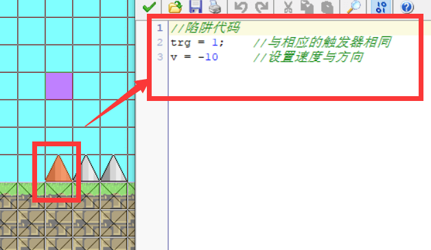</p>
<p>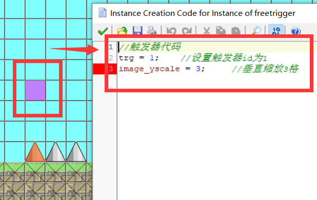</p>
<h2 id="结语">结语</h2>
<p>这就是一个最基本的 i wanna 游戏了，如果你制作好了一个完整的作品，可以点击工具栏“创建可执行exe文件”导出。</p>
<p>好了，这就是本期 i wanna 游戏制作的所有内容了，因为网上的教程真的特别特别少，所有我全都是照着文档一步一步打出来的，如有错误，欢迎大佬帮忙指出。</p>


    <p>🎵本期背景音乐：Bloom of Youth</p>
    <p>感谢观看，我是冰渊(IceAbyss)，我们下期再见:)👋👋🏻👋🏼👋🏽👋🏾👋🏿</p>
    <p>若有错漏或者维权的地方请联系我->邮箱📧3211997138@qq.com</p>
 
 
 
 
 
 
 

 
 
     </div>
     <div class="author-right">
           <p>作者：冰渊(IceAbyss)</p>
           <p>出处：<a href="https://iceabyss.github.io">https://iceabyss.github.io</a></p>
           <p>本文版权归作者所有，欢迎转载，但未经作者同意必须保留此段声明，且在文章页面明显位置给出原文连接，否则保留追究法律责任的权利。</p>
     </div>
         <footer class="article-footer clearfix">

            
            <div class="article-tags">
   
                <span></span> <a href="/tags/游戏制作/index.html">游戏制作</a>
                </div>
 
 
 
 <div class="article-share" id="share">
 
   
 <!-- JiaThis Button BEGIN -->
 <div class="jiathis_style_24x24">
     <a class="jiathis_button_qzone"></a>
     <a class="jiathis_button_tsina"></a>
     <a class="jiathis_button_tqq"></a>
     <a class="jiathis_button_weixin"></a>
     <a class="jiathis_button_renren"></a>
     <a href="http://www.jiathis.com/share?uid=2134021" class="jiathis jiathis_txt jtico jtico_jiathis" target="_blank"></a>
 </div>
 <script type="text/javascript">
 var jiathis_config = {data_track_clickback:'true'};
 </script>
 <script type="text/javascript" src="http://v3.jiathis.com/code_mini/jia.js?uid=2134021" charset="utf-8"></script>
 <!-- JiaThis Button END -->   
 
 
 </div>
 </footer>   	       
     </article>
     
 <nav class="article-nav clearfix">
  
 
 <div class="next">
 <a href="/blog/4/4.html"  title="Blog(博客)">
  <strong>NEXT:</strong><br/> 
  <span>Markdown语法篇
 </span>
 </a>
 </div>
 
 </nav>
 
     <!-- 如果不是首页且没使用 `comments: false` 关闭评论，则尝试加载评论 -->
 
     <!-- 配置中启用多说时，导入相应代码 -->
     
 
 
 </div>  
       <div class="openaside"><a class="navbutton" href="#" title="显示侧边栏"></a></div>
 <!--
   <div id="toc" class="toc-aside">
   <strong class="toc-title">文章目录</strong>
   <ol class="toc"><li class="toc-item toc-level-1"><a class="toc-link" href="#Canvas-性能优化"><span class="toc-number">1.</span> <span class="toc-text">Canvas 性能优化</span></a><ol class="toc-child"><li class="toc-item toc-level-2"><a class="toc-link" href="#Canvas-上下文切换"><span class="toc-number">1.1.</span> <span class="toc-text">Canvas 上下文切换</span></a></li><li class="toc-item toc-level-2"><a class="toc-link" href="#Canvas-拆分"><span class="toc-number">1.2.</span> <span class="toc-text">Canvas 拆分</span></a><ol class="toc-child"><li class="toc-item toc-level-3"><a class="toc-link" href="#绘制范围的拆分"><span class="toc-number">1.2.1.</span> <span class="toc-text">绘制范围的拆分</span></a></li><li class="toc-item toc-level-3"><a class="toc-link" href="#堆叠层次的拆分"><span class="toc-number">1.2.2.</span> <span class="toc-text">堆叠层次的拆分</span></a></li><li class="toc-item toc-level-3"><a class="toc-link" href="#Canvas-拆分的开销"><span class="toc-number">1.2.3.</span> <span class="toc-text">Canvas 拆分的开销</span></a></li></ol></li><li class="toc-item toc-level-2"><a class="toc-link" href="#离屏渲染"><span class="toc-number">1.3.</span> <span class="toc-text">离屏渲染</span></a><ol class="toc-child"><li class="toc-item toc-level-3"><a class="toc-link" href="#各种离屏渲染场景"><span class="toc-number">1.3.1.</span> <span class="toc-text">各种离屏渲染场景</span></a></li><li class="toc-item toc-level-3"><a class="toc-link" href="#OffscreenCanvas-API-能力"><span class="toc-number">1.3.2.</span> <span class="toc-text">OffscreenCanvas API 能力</span></a></li></ol></li><li class="toc-item toc-level-2"><a class="toc-link" href="#其他-Canvas-优化方式"><span class="toc-number">1.4.</span> <span class="toc-text">其他 Canvas 优化方式</span></a><ol class="toc-child"><li class="toc-item toc-level-3"><a class="toc-link" href="#增量渲染"><span class="toc-number">1.4.1.</span> <span class="toc-text">增量渲染</span></a></li></ol></li></ol></li><li class="toc-item toc-level-1"><a class="toc-link" href="#结束语"><span class="toc-number">2.</span> <span class="toc-text">结束语</span></a></li></ol>
   </div>
 -->

 
 
 
 <div id="asidepart">
 <div class="closeaside"><a class="closebutton" href="#" title="隐藏侧边栏"></a></div>
 <aside class="clearfix">
 
       
    <div class="archiveslist">
        <p class="asidetitle">最近文章</p>
            <ul class="archive-list">
                

                <li class="archive-list-item">
                    <a class="archive-list-link" href="/blog/5/5.html" title="i wanna 游戏制作（一）">i wanna 游戏制作（一）
                    </a>
                </li>

                

                <li class="archive-list-item">
                    <a class="archive-list-link" href="/blog/4/4.html" title="Markdown语法篇">Markdown语法篇
                    </a>
                </li>

                    
                <li class="archive-list-item">
                    <a class="archive-list-link" href="/blog/3/3.html" title="网络是如何运作的？">网络是如何运作的？</a>
                </li>
                
            
                    
                <li class="archive-list-item">
                    <a class="archive-list-link" href="/blog/2/2.html" title="2D图片变3D？！">2D图片变3D？！</a>
                </li>
                
            
                    
                <li class="archive-list-item">
                    <a class="archive-list-link" href="/blog/1/1.html" title="Hello World!">Hello World!</a>
                </li>

				
               
 <br>
 <div class="archiveslist">
	<p class="asidetitle"><a href="/tags/index.html">标签</a></p>
	<ul class="archive-list">
		<li class="archive-list-item">
			<a href="/tags/聊天灌水/index.html">聊天灌水</a>
			<a href="/tags/技术分享/index.html">技术分享</a>
			<a href="/tags/好文翻译/index.html">好文翻译</a>
			<a href="/tags/游戏制作/index.html">游戏制作</a>

		</li>
	</ul>
</div>


                 
             
 <!--	
             
                     
                 <li class="archive-list-item">
                     <a class="archive-list-link" href="/2022/02/07/front-end-engineering/" title="我所理解的前端工程化">我所理解的前端工程化</a>
                 </li>
                 
             
                     
                 <li class="archive-list-item">
                     <a class="archive-list-link" href="/2022/01/09/angular-design-ivy-6-detect-change/" title="Angular框架解读--Ivy编译器之变更检测">Angular框架解读--Ivy编译...</a>
                 </li>
                 
             
                     
                 <li class="archive-list-item">
                     <a class="archive-list-link" href="/2021/12/25/my-2021/" title="2021 年度总结--冲啊打工人">2021 年度总结--冲啊打工人...</a>
                 </li>
                 
             
                     
                 <li class="archive-list-item">
                     <a class="archive-list-link" href="/2021/12/12/about-front-end-14/" title="前端这几年--14.技术深度是伪命题吗">前端这几年--14.技术深度是伪命题...</a>
                 </li>
                 
 -->
             
                 
             
                 
             
                 
             
                 
             
                 
             
                 
             
                 
             
                 
             
                 
             
                 
             
                 
             
                 
             
                 
             
                 
             
                 
             
                 
             
                 
             
                 
             
                 
             
                 
             
                 
             
                 
             
                 
             
                 
             
                 
             
                 
             
                 
             
                 
             
                 
             
                 
             
                 
             
                 
             
                 
             
                 
             
                 
             
                 
             
                 
             
                 
             
                 
             
                 
             
                 
             
                 
             
                 
             
                 
             
                 
             
                 
             
                 
             
                 
             
                 
             
                 
             
                 
             
                 
             
                 
             
                 
             
                 
             
                 
             
                 
             
                 
             
                 
             
                 
             
                 
             
                 
             
                 
             
                 
             
                 
             
                 
             
                 
             
                 
             
                 
             
                 
             
                 
             
                 
             
                 
             
                 
             
                 
             
                 
             
                 
             
                 
             
                 
             
                 
             
                 
             
                 
             
                 
             
                 
             
                 
             
                 
             
                 
             
                 
             
                 
             
                 
             
                 
             
                 
             
                 
             
                 
             
                 
             
                 
             
                 
             
                 
             
                 
             
                 
             
                 
             
                 
             
                 
             
                 
             
                 
             
                 
             
                 
             
                 
             
                 
             
                 
             
                 
             
                 
             
                 
             
                 
             
                 
             
                 
             
                 
             
                 
             
                 
             
                 
             
                 
             
                 
             
                 
             
                 
             
                 
             
                 
             
                 
             
                 
             
                 
             
                 
             
                 
             
                 
             
                 
             
                 
             
                 
             
                 
             
                 
             
                 
             
                 
             
                 
             
                 
             
                 
             
                 
             
                 
             
                 
             
                 
             
                 
             
                 
             
                 
             
                 
             
                 
             
                 
             
                 
             
                 
             
                 
             
                 
             
                 
             
                 
             
                 
             
                 
             
                 
             
                 
             
                 
             
                 
             
                 
             
                 
             
                 
             
                 
             
                 
             
                 
             
                 
             
                 
             
                 
             
                 
             
                 
             
                 
             
                 
             
                 
             
                 
             
                 
             
                 
             
                 
             
                 
             
                 
             
                 
             
                 
             
                 
             
                 
             
                 
             
                 
             
                 
             
                 
             
                 
             
                 
             
                 
             
                 
             
                 
             
                 
             
                 
             
                 
             
                 
             
                 
             
                 
             
                 
             
                 
             
                 
             
                 
             
                 
             
                 
             
                 
             
                 
             
                 
             
                 
             
                 
             
                 
             
                 
             
                 
             
                 
             
                 
             
                 
             
                 
             
                 
             
                 
             
                 
             
                 
             
                 
             
                 
             
                 
             
                 
             
                 
             
                 
             
                 
             
                 
             
                 
             
                 
             
                 
             
                 
             
                 
             
                 
             
                 
             
                 
             
                 
             
                 
             
                 
             
                 
             
                 
             
                 
             
                 
             
                 
             
                 
             
                 
             
                 
             
                 
             
                 
             
                 
             
                 
             
                 
             
                 
             
                 
             
                 
             
                 
             
                 
             
                 
             
                 
             
                 
             
                 
             
                 
             
                 
             
                 
             
                 
             
                 
             
                 
             
                 
             
                 
             
                 
             
                 
             
                 
             
                 
             
                 
             
                 
             
                 
             
                 
             
                 
             
                 
             
                 
             
                 
             
                 
             
                 
             
                 
             
                 
             
                 
             
                 
             
                 
             
                 
             
                 
             
                 
             
                 
             
                 
             
                 
             
                 
             
                 
             
                 
             
                 
             
                 
             
                 
             
                 
             
                 
             
                 
             
                 
             
                 
             
                 
             
                 
             
                 
             
                 
             
                 
             
             </ul>
     </div>
 
 
 <!--
   <div class="archiveslist">
     <p class="asidetitle"><a href="/archives">归档</a></p>
       <ul class="archive-list"><li class="archive-list-item"><a class="archive-list-link" href="/archives/2022/07/">七月 2022</a><span class="archive-list-count">1</span></li><li class="archive-list-item"><a class="archive-list-link" href="/archives/2022/06/">六月 2022</a><span class="archive-list-count">1</span></li><li class="archive-list-item"><a class="archive-list-link" href="/archives/2022/05/">五月 2022</a><span class="archive-list-count">1</span></li><li class="archive-list-item"><a class="archive-list-link" href="/archives/2022/04/">四月 2022</a><span class="archive-list-count">1</span></li><li class="archive-list-item"><a class="archive-list-link" href="/archives/2022/03/">三月 2022</a><span class="archive-list-count">1</span></li><li class="archive-list-item"><a class="archive-list-link" href="/archives/2022/02/">二月 2022</a><span class="archive-list-count">2</span></li><li class="archive-list-item"><a class="archive-list-link" href="/archives/2022/01/">一月 2022</a><span class="archive-list-count">1</span></li><li class="archive-list-item"><a class="archive-list-link" href="/archives/2021/12/">十二月 2021</a><span class="archive-list-count">3</span></li><li class="archive-list-item"><a class="archive-list-link" href="/archives/2021/11/">十一月 2021</a><span class="archive-list-count">4</span></li><li class="archive-list-item"><a class="archive-list-link" href="/archives/2021/10/">十月 2021</a><span class="archive-list-count">3</span></li><li class="archive-list-item"><a class="archive-list-link" href="/archives/2021/09/">九月 2021</a><span class="archive-list-count">1</span></li><li class="archive-list-item"><a class="archive-list-link" href="/archives/2021/08/">八月 2021</a><span class="archive-list-count">1</span></li><li class="archive-list-item"><a class="archive-list-link" href="/archives/2021/07/">七月 2021</a><span class="archive-list-count">2</span></li><li class="archive-list-item"><a class="archive-list-link" href="/archives/2021/06/">六月 2021</a><span class="archive-list-count">2</span></li><li class="archive-list-item"><a class="archive-list-link" href="/archives/2021/05/">五月 2021</a><span class="archive-list-count">3</span></li><li class="archive-list-item"><a class="archive-list-link" href="/archives/2021/04/">四月 2021</a><span class="archive-list-count">1</span></li><li class="archive-list-item"><a class="archive-list-link" href="/archives/2021/03/">三月 2021</a><span class="archive-list-count">2</span></li><li class="archive-list-item"><a class="archive-list-link" href="/archives/2021/02/">二月 2021</a><span class="archive-list-count">1</span></li><li class="archive-list-item"><a class="archive-list-link" href="/archives/2021/01/">一月 2021</a><span class="archive-list-count">2</span></li><li class="archive-list-item"><a class="archive-list-link" href="/archives/2020/11/">十一月 2020</a><span class="archive-list-count">1</span></li><li class="archive-list-item"><a class="archive-list-link" href="/archives/2020/10/">十月 2020</a><span class="archive-list-count">2</span></li><li class="archive-list-item"><a class="archive-list-link" href="/archives/2020/08/">八月 2020</a><span class="archive-list-count">5</span></li><li class="archive-list-item"><a class="archive-list-link" href="/archives/2020/07/">七月 2020</a><span class="archive-list-count">3</span></li><li class="archive-list-item"><a class="archive-list-link" href="/archives/2020/06/">六月 2020</a><span class="archive-list-count">3</span></li><li class="archive-list-item"><a class="archive-list-link" href="/archives/2020/04/">四月 2020</a><span class="archive-list-count">4</span></li><li class="archive-list-item"><a class="archive-list-link" href="/archives/2020/03/">三月 2020</a><span class="archive-list-count">7</span></li><li class="archive-list-item"><a class="archive-list-link" href="/archives/2020/02/">二月 2020</a><span class="archive-list-count">2</span></li><li class="archive-list-item"><a class="archive-list-link" href="/archives/2019/12/">十二月 2019</a><span class="archive-list-count">3</span></li><li class="archive-list-item"><a class="archive-list-link" href="/archives/2019/11/">十一月 2019</a><span class="archive-list-count">4</span></li><li class="archive-list-item"><a class="archive-list-link" href="/archives/2019/10/">十月 2019</a><span class="archive-list-count">2</span></li><li class="archive-list-item"><a class="archive-list-link" href="/archives/2019/09/">九月 2019</a><span class="archive-list-count">1</span></li><li class="archive-list-item"><a class="archive-list-link" href="/archives/2019/08/">八月 2019</a><span class="archive-list-count">1</span></li><li class="archive-list-item"><a class="archive-list-link" href="/archives/2019/07/">七月 2019</a><span class="archive-list-count">4</span></li><li class="archive-list-item"><a class="archive-list-link" href="/archives/2019/06/">六月 2019</a><span class="archive-list-count">3</span></li><li class="archive-list-item"><a class="archive-list-link" href="/archives/2019/05/">五月 2019</a><span class="archive-list-count">1</span></li><li class="archive-list-item"><a class="archive-list-link" href="/archives/2019/04/">四月 2019</a><span class="archive-list-count">2</span></li><li class="archive-list-item"><a class="archive-list-link" href="/archives/2019/03/">三月 2019</a><span class="archive-list-count">2</span></li><li class="archive-list-item"><a class="archive-list-link" href="/archives/2019/02/">二月 2019</a><span class="archive-list-count">2</span></li><li class="archive-list-item"><a class="archive-list-link" href="/archives/2019/01/">一月 2019</a><span class="archive-list-count">3</span></li><li class="archive-list-item"><a class="archive-list-link" href="/archives/2018/12/">十二月 2018</a><span class="archive-list-count">4</span></li><li class="archive-list-item"><a class="archive-list-link" href="/archives/2018/11/">十一月 2018</a><span class="archive-list-count">4</span></li><li class="archive-list-item"><a class="archive-list-link" href="/archives/2018/10/">十月 2018</a><span class="archive-list-count">1</span></li><li class="archive-list-item"><a class="archive-list-link" href="/archives/2018/09/">九月 2018</a><span class="archive-list-count">3</span></li><li class="archive-list-item"><a class="archive-list-link" href="/archives/2018/08/">八月 2018</a><span class="archive-list-count">3</span></li><li class="archive-list-item"><a class="archive-list-link" href="/archives/2018/07/">七月 2018</a><span class="archive-list-count">3</span></li><li class="archive-list-item"><a class="archive-list-link" href="/archives/2018/06/">六月 2018</a><span class="archive-list-count">3</span></li><li class="archive-list-item"><a class="archive-list-link" href="/archives/2018/05/">五月 2018</a><span class="archive-list-count">5</span></li><li class="archive-list-item"><a class="archive-list-link" href="/archives/2018/04/">四月 2018</a><span class="archive-list-count">4</span></li><li class="archive-list-item"><a class="archive-list-link" href="/archives/2018/03/">三月 2018</a><span class="archive-list-count">7</span></li><li class="archive-list-item"><a class="archive-list-link" href="/archives/2018/02/">二月 2018</a><span class="archive-list-count">4</span></li><li class="archive-list-item"><a class="archive-list-link" href="/archives/2018/01/">一月 2018</a><span class="archive-list-count">9</span></li><li class="archive-list-item"><a class="archive-list-link" href="/archives/2017/12/">十二月 2017</a><span class="archive-list-count">5</span></li><li class="archive-list-item"><a class="archive-list-link" href="/archives/2017/11/">十一月 2017</a><span class="archive-list-count">3</span></li><li class="archive-list-item"><a class="archive-list-link" href="/archives/2017/10/">十月 2017</a><span class="archive-list-count">5</span></li><li class="archive-list-item"><a class="archive-list-link" href="/archives/2017/09/">九月 2017</a><span class="archive-list-count">6</span></li><li class="archive-list-item"><a class="archive-list-link" href="/archives/2017/08/">八月 2017</a><span class="archive-list-count">11</span></li><li class="archive-list-item"><a class="archive-list-link" href="/archives/2017/07/">七月 2017</a><span class="archive-list-count">9</span></li><li class="archive-list-item"><a class="archive-list-link" href="/archives/2017/06/">六月 2017</a><span class="archive-list-count">10</span></li><li class="archive-list-item"><a class="archive-list-link" href="/archives/2017/05/">五月 2017</a><span class="archive-list-count">15</span></li><li class="archive-list-item"><a class="archive-list-link" href="/archives/2017/04/">四月 2017</a><span class="archive-list-count">7</span></li><li class="archive-list-item"><a class="archive-list-link" href="/archives/2017/03/">三月 2017</a><span class="archive-list-count">10</span></li><li class="archive-list-item"><a class="archive-list-link" href="/archives/2017/02/">二月 2017</a><span class="archive-list-count">41</span></li><li class="archive-list-item"><a class="archive-list-link" href="/archives/2017/01/">一月 2017</a><span class="archive-list-count">6</span></li><li class="archive-list-item"><a class="archive-list-link" href="/archives/2016/12/">十二月 2016</a><span class="archive-list-count">7</span></li><li class="archive-list-item"><a class="archive-list-link" href="/archives/2016/11/">十一月 2016</a><span class="archive-list-count">9</span></li><li class="archive-list-item"><a class="archive-list-link" href="/archives/2016/10/">十月 2016</a><span class="archive-list-count">5</span></li><li class="archive-list-item"><a class="archive-list-link" href="/archives/2016/09/">九月 2016</a><span class="archive-list-count">7</span></li><li class="archive-list-item"><a class="archive-list-link" href="/archives/2016/08/">八月 2016</a><span class="archive-list-count">9</span></li><li class="archive-list-item"><a class="archive-list-link" href="/archives/2016/07/">七月 2016</a><span class="archive-list-count">14</span></li><li class="archive-list-item"><a class="archive-list-link" href="/archives/2016/06/">六月 2016</a><span class="archive-list-count">9</span></li></ul>
   </div>
 -->
 
 <!--
 <div class="archiveslist">
     <p class="asidetitle"><a href="/categories">分类</a></p>
         <ul class="archive-list">
         
             <li class="archive-list-item">
                 <a class="archive-list-link" href="/categories/Angular源码/" title="Angular源码">Angular源码<sup>16</sup></a>
             </li>
         
             <li class="archive-list-item">
                 <a class="archive-list-link" href="/categories/CSS炒饭/" title="CSS炒饭">CSS炒饭<sup>3</sup></a>
             </li>
         
             <li class="archive-list-item">
                 <a class="archive-list-link" href="/categories/D3小馒头/" title="D3小馒头">D3小馒头<sup>8</sup></a>
             </li>
         
             <li class="archive-list-item">
                 <a class="archive-list-link" href="/categories/angular2火锅/" title="angular2火锅">angular2火锅<sup>25</sup></a>
             </li>
         
             <li class="archive-list-item">
                 <a class="archive-list-link" href="/categories/angular混搭/" title="angular混搭">angular混搭<sup>33</sup></a>
             </li>
         
             <li class="archive-list-item">
                 <a class="archive-list-link" href="/categories/box2djs方糖/" title="box2djs方糖">box2djs方糖<sup>34</sup></a>
             </li>
         
             <li class="archive-list-item">
                 <a class="archive-list-link" href="/categories/cyclejs哈根达斯/" title="cyclejs哈根达斯">cyclejs哈根达斯<sup>8</sup></a>
             </li>
         
             <li class="archive-list-item">
                 <a class="archive-list-link" href="/categories/jQuery杂烩/" title="jQuery杂烩">jQuery杂烩<sup>3</sup></a>
             </li>
         
             <li class="archive-list-item">
                 <a class="archive-list-link" href="/categories/js什锦/" title="js什锦">js什锦<sup>27</sup></a>
             </li>
         
             <li class="archive-list-item">
                 <a class="archive-list-link" href="/categories/react沙拉/" title="react沙拉">react沙拉<sup>16</sup></a>
             </li>
         
             <li class="archive-list-item">
                 <a class="archive-list-link" href="/categories/three-js奶茶/" title="three.js奶茶">three.js奶茶<sup>5</sup></a>
             </li>
         
             <li class="archive-list-item">
                 <a class="archive-list-link" href="/categories/vue八宝粥/" title="vue八宝粥">vue八宝粥<sup>30</sup></a>
             </li>
         
             <li class="archive-list-item">
                 <a class="archive-list-link" href="/categories/webpack宾治/" title="webpack宾治">webpack宾治<sup>9</sup></a>
             </li>
         
             <li class="archive-list-item">
                 <a class="archive-list-link" href="/categories/web乱炖/" title="web乱炖">web乱炖<sup>2</sup></a>
             </li>
         
             <li class="archive-list-item">
                 <a class="archive-list-link" href="/categories/前端满汉全席/" title="前端满汉全席">前端满汉全席<sup>8</sup></a>
             </li>
         
             <li class="archive-list-item">
                 <a class="archive-list-link" href="/categories/前端解决方案/" title="前端解决方案">前端解决方案<sup>19</sup></a>
             </li>
         
             <li class="archive-list-item">
                 <a class="archive-list-link" href="/categories/喵/" title="喵">喵<sup>2</sup></a>
             </li>
         
             <li class="archive-list-item">
                 <a class="archive-list-link" href="/categories/小程序双皮奶/" title="小程序双皮奶">小程序双皮奶<sup>33</sup></a>
             </li>
         
             <li class="archive-list-item">
                 <a class="archive-list-link" href="/categories/工作这杯茶/" title="工作这杯茶">工作这杯茶<sup>26</sup></a>
             </li>
         
             <li class="archive-list-item">
                 <a class="archive-list-link" href="/categories/应用巧克力盒/" title="应用巧克力盒">应用巧克力盒<sup>2</sup></a>
             </li>
         
             <li class="archive-list-item">
                 <a class="archive-list-link" href="/categories/思想棉花糖/" title="思想棉花糖">思想棉花糖<sup>8</sup></a>
             </li>
         
             <li class="archive-list-item">
                 <a class="archive-list-link" href="/categories/柴米油盐工具集/" title="柴米油盐工具集">柴米油盐工具集<sup>1</sup></a>
             </li>
         
             <li class="archive-list-item">
                 <a class="archive-list-link" href="/categories/自动化甜筒/" title="自动化甜筒">自动化甜筒<sup>1</sup></a>
             </li>
         
             <li class="archive-list-item">
                 <a class="archive-list-link" href="/categories/非前端钙片/" title="非前端钙片">非前端钙片<sup>7</sup></a>
             </li>
         
         </ul>
 </div>
 
 -->
   
 
 
 
 
 <!--标签
 <div class="archiveslist">
     <p class="asidetitle">标签</p>
         <ul class="archive-list">
         
             <li class="archive-list-item">
                 <a class="archive-list-link" href="/tags/分享/" title="分享">分享<sup>49</sup></a>
             </li>
         
             <li class="archive-list-item">
                 <a class="archive-list-link" href="/tags/功能设计/" title="功能设计">功能设计<sup>16</sup></a>
             </li>
         
             <li class="archive-list-item">
                 <a class="archive-list-link" href="/tags/原创部件/" title="原创部件">原创部件<sup>1</sup></a>
             </li>
         
             <li class="archive-list-item">
                 <a class="archive-list-link" href="/tags/心态/" title="心态">心态<sup>22</sup></a>
             </li>
         
             <li class="archive-list-item">
                 <a class="archive-list-link" href="/tags/性能优化/" title="性能优化">性能优化<sup>5</sup></a>
             </li>
         
             <li class="archive-list-item">
                 <a class="archive-list-link" href="/tags/教程/" title="教程">教程<sup>80</sup></a>
             </li>
         
             <li class="archive-list-item">
                 <a class="archive-list-link" href="/tags/晒猫/" title="晒猫">晒猫<sup>2</sup></a>
             </li>
         
             <li class="archive-list-item">
                 <a class="archive-list-link" href="/tags/笔记/" title="笔记">笔记<sup>121</sup></a>
             </li>
         
             <li class="archive-list-item">
                 <a class="archive-list-link" href="/tags/算法/" title="算法">算法<sup>9</sup></a>
             </li>
         
             <li class="archive-list-item">
                 <a class="archive-list-link" href="/tags/自制插件/" title="自制插件">自制插件<sup>2</sup></a>
             </li>
         
             <li class="archive-list-item">
                 <a class="archive-list-link" href="/tags/逻辑实现/" title="逻辑实现">逻辑实现<sup>19</sup></a>
             </li>
         
         </ul>
 </div>
 -->
 
     <div class="archiveslist">
     <p class="asidetitle"><a href="/archives">about</a></p>
       <ul class="archive-list">
           <li class="archive-list-item">
               <a>iceabyss545@gmail.com</a>
               <a href="https://github.com/ice-abyss">github.com/ice-abyss</a>
           </li>
       </ul>
   </div>
 
   <div class="rsspart">
     <a href="https://github.com/ice-abyss" target="_blank" title="rss">Github follow me</a>
 </div>
 
 </aside>
 </div>
     </div>
     <footer><div id="footer" >
     
     <section class="info">
         <p> 即使梦想再小，却很伟大 ^_^ </p>
     </section>
      
         <p class="copyright">Powered by <a href="https://github.com/ice-abyss" target="_blank" title="hexo">冰渊(IceAbyss)</a> © 2022 
         
         <a href="https://github.com/ice-abyss" target="_blank" title="IceAbyss">冰渊(IceAbyss)</a>
         
         </p>
 </div>
 </footer>
     <script src="/blog_something/js/jquery-2.1.0.min.js"></script>
 <script type="text/javascript">
 $(document).ready(function(){ 
   $('.navbar').click(function(){
     $('header nav').toggleClass('shownav');
   });
   var myWidth = 0;
   function getSize(){
     if( typeof( window.innerWidth ) == 'number' ) {
       myWidth = window.innerWidth;
     } else if( document.documentElement && document.documentElement.clientWidth) {
       myWidth = document.documentElement.clientWidth;
     };
   };
   var m = $('#main'),
       a = $('#asidepart'),
       c = $('.closeaside'),
       o = $('.openaside');
   $(window).resize(function(){
     getSize(); 
     if (myWidth >= 1024) {
       $('header nav').removeClass('shownav');
     }else
     {
       m.removeClass('moveMain');
       a.css('display', 'block').removeClass('fadeOut');
       o.css('display', 'none');
       
       $('#toc.toc-aside').css('display', 'none');
         
     }
   });
   c.click(function(){
     a.addClass('fadeOut').css('display', 'none');
     o.css('display', 'block').addClass('fadeIn');
     m.addClass('moveMain');
   });
   o.click(function(){
     o.css('display', 'none').removeClass('beforeFadeIn');
     a.css('display', 'block').removeClass('fadeOut').addClass('fadeIn');      
     m.removeClass('moveMain');
   });
   $(window).scroll(function(){
     o.css("top",Math.max(80,260-$(this).scrollTop()));
   });
 });
 </script>
 
 <script type="text/javascript">
 $(document).ready(function(){ 
   var ai = $('.article-content>iframe'),
       ae = $('.article-content>embed'),
       t  = $('#toc'),
       h  = $('article h2')
       ah = $('article h2'),
       ta = $('#toc.toc-aside'),
       o  = $('.openaside'),
       c  = $('.closeaside');
   if(ai.length>0){
     ai.wrap('<div class="video-container" />');
   };
   if(ae.length>0){
    ae.wrap('<div class="video-container" />');
   };
   if(ah.length==0){
     t.css('display','none');
   }else{
     c.click(function(){
       ta.css('display', 'block').addClass('fadeIn');
     });
     o.click(function(){
       ta.css('display', 'none');
     });
     $(window).scroll(function(){
       ta.css("top",Math.max(140,320-$(this).scrollTop()));
     });
   };
 });
 </script>
 
 
 
 
 
 
 
   </body>
 </html>
 